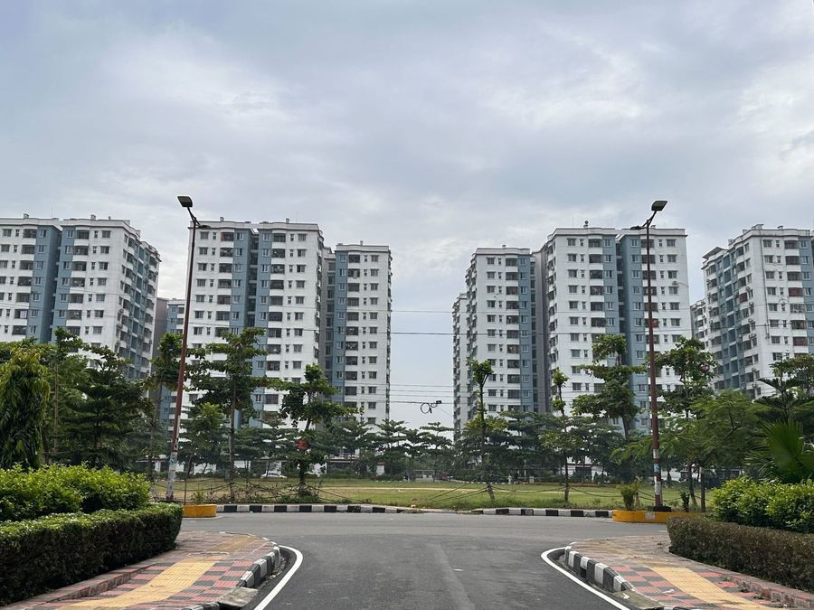
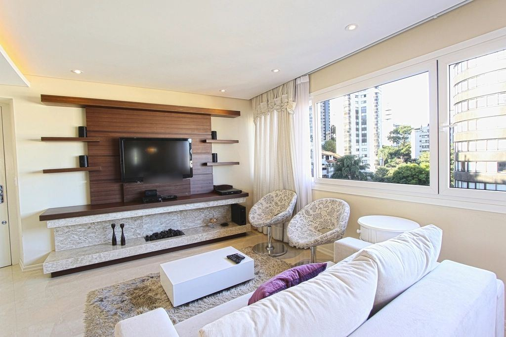
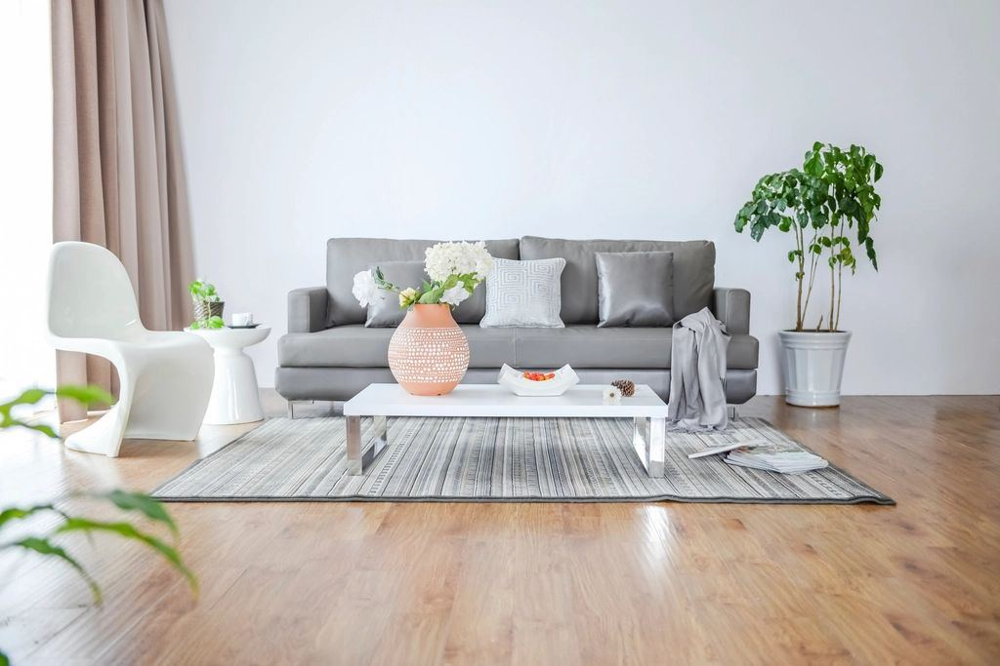

Gayrimenkulsatılık, kiralık ve iş yeri; arayanlar ve mülk sahipleri için
Ev almak, kiralamak, evinizi satmak ya da kiraya vermek. Her biri ayrı bir yol, ama hepsi aynı yerden başlar: doğru bilgi ve net bir tarif. Bu paftada süreci adım adım çizdik; aradığınızı yazarsanız uygun seçenekleri biz getirelim.

İlan listesi yerine tarif
Bu sitede ilan kartı yok; bilerek. Portföy her gün değişir, sitede bekleyen eski bir ilan sizi yanlış yere götürebilir. Bunun yerine aradığınızı tarif edin: oda sayısını seçin, birkaç satır yazın, güncel ve uygun seçenekleri size iletelim.
Talebiniz netleştikçe seçenekler daralır, zaman kazanırsınız. "Olmazsa olmaz" ile "olsa iyi olur" listenizi ayırmanız en çok işe yarayan adımdır.
Satılık arıyorum
Kiralık arıyorum
Mülküm var
İş yeri
Gayrimenkul lejantı
Her işaretin bir anlamı var. Aşağıdakiler, bu ofiste konuşabileceğiniz başlıca konular. Listede olmayan bir durumunuz varsa sorun, bilgi verelim.
Satılık konut
Bütçe, oda sayısı ve semt tercihinize göre seçenekleri birlikte süzeriz. Gezme randevularını planlar, evi plan ve evrak yönünden birlikte değerlendiririz.
Satılık talebi oluşturunKiralık konut
Aileler, çalışanlar ve öğrenciler için kiralık seçenekler. Sözleşme, depozito ve teslim tutanağı konularında yol gösteririz.
Kiralık talebi oluşturunMülk sahiplerine
Evinizi satmak ya da kiraya vermek için doğru tanıtım, gerçekçi bir fiyat aralığı ve düzenli bir gösterim planı.
Mülkünüzü anlatınDükkân ve ofis
İş yeri arayanlar ve iş yeri sahipleri için. Tapudaki nitelik (mesken ya da iş yeri) ve ruhsat koşulları, kiralamadan önce mutlaka kontrol edilmeli.
İş yeri talebi oluşturunFiyat görüşü
Bölgedeki benzer mülkler üzerinden bir fiyat aralığı konuşuruz. Bu bir görüştür; kredi ve resmî işlemlerde lisanslı değerleme raporu gerekir.
Fiyat görüşü isteyinTapu sürecinde yönlendirme
Alım satımda başvuru, istenen belgeler ve devir günü adımlarında yanınızdayız. Hukuki ve vergisel sorular için uzmanına yönlendiririz.
Tapu adımlarını görünEv gezerken kontrol listesi
Bir evi gezerken heyecan ayrıntıyı unutturur. Telefonunuzda bu listeyi açık tutun, netleşen başlıkları işaretleyin. Netleşmeyenleri tek dokunuşla bize sorabilirsiniz.
Bina
Daire
Evrak
Kiralıyorsanız
NETLEŞMEYENLER · MESAJönizleme
Merhaba İmser Gayrimenkul, baktığım bir ev için birkaç sorum var.
Tapu türleri: üç kısa tanım
Aynı binada iki dairenin tapusu farklı nitelikte olabilir. Satın almadan önce hangisiyle karşı karşıya olduğunuzu bilmek, kredi, iskân ve gelecekteki satış için önemlidir.
Kat mülkiyeti
- NE ZAMAN
- Yapı tamamlanıp yapı kullanma izin belgesi (iskân) alındıktan sonra kurulur.
- NE ANLATIR
- Daireniz tapuda bağımsız bölüm olarak kayıtlıdır; arsa payınız da yazılıdır.
- DİKKAT
- Konut kredilerinde bankaların en kolay kabul ettiği türdür; yine de son karar bankanındır.
Kat irtifakı
- NE ZAMAN
- Yapı henüz tamamlanmadan, onaylı projeye göre kurulur.
- NE ANLATIR
- Arsa payına bağlı bir irtifak hakkıdır; bağımsız bölüm projede tarif edilir.
- DİKKAT
- Yapı bitip iskân alınınca kat mülkiyetine geçilebilir. İskânın durumu ve geçişin ne zaman yapılacağı sorulmalı.
Hisseli tapu
- NE ZAMAN
- Bir taşınmaz birden çok kişiye pay oranında ait olduğunda.
- NE ANLATIR
- Hangi bölümün kime ait olduğu tapuda ayrıca belirtilmemiş olabilir.
- DİKKAT
- Diğer paydaşların hakları (örneğin önalım) gündeme gelebilir. Karar vermeden önce bir hukukçuya danışmanızı öneririz.
Tapu devrinde genel adımlar
Aşağıdaki sıra genel bir çerçevedir. Belgeler, harç tutarları ve uygulamalar zaman içinde değişebilir; işlemden önce güncel bilgiyi tapu müdürlüğünden ya da Web Tapu'dan teyit edin.
Ön kontrol
Satıcıdan güncel tapu kaydını isteyin; ipotek, haciz ya da şerh olup olmadığına bakın. İmar ve iskân durumunu belediyeden öğrenebilirsiniz.
Anlaşma
Fiyat, ödeme şekli ve teslim tarihi netleşir. Kapora veriliyorsa neye karşılık verildiği yazılı olmalı; şartlarını bir hukukçuyla konuşun.
Başvuru ve randevu
Satış başvurusu Web Tapu üzerinden ya da tapu müdürlüğü aracılığıyla yapılır; işlem için randevu verilir.
Belgeler
Genellikle tarafların kimlik belgeleri, zorunlu deprem sigortası (DASK) poliçesi ve belediyeden emlak vergisi değerini gösteren yazı istenir. Vekâletle işlem yapılacaksa vekâletname gerekir.
Harç ve ödeme
Tapu harcı ve döner sermaye bedeli işlemden önce ödenir. Tutarlar değişebildiği için güncelini resmî kaynaktan öğrenin; satış bedelinin nasıl ödeneceğini önceden kararlaştırın.
İmza ve teslim
Taraflar tapu müdürlüğünde imza atar, tapu yeni malik adına düzenlenir. Anahtar teslimi, sayaç ve aboneliklerin devri ile aidat hesabının kapatılması süreci tamamlar.
Miras, vekâlet, yabancı uyruklu alıcı, kredi ile alım ya da vergi doğuran satışlar gibi durumlarda süreç farklılaşır. Bu konularda avukat, mali müşavir ya da tapu müdürlüğünden destek almanızı öneririz.
Kiracı ve ev sahibi için iki kısa liste
Kiralama, iki tarafın da baştan aynı şeyi anlamasıyla kolaylaşır. Sözleşmeye geçmeden önce aşağıdakileri konuşmanızı öneririz.

Kira sözleşmesinden önce
- Bedel ve artış: kira bedeli, ödeme günü ve artışın nasıl yapılacağı yazılı olsun. Artışlar dönem dönem yasal düzenlemelerle sınırlanabilir; güncel durumu sorun.
- Güvence bedeli: Türk Borçlar Kanunu'na göre depozito üç aylık kira bedelini aşamaz ve kanunda bankaya yatırılması öngörülür.
- Giderler: aidat, ortak giderler ve demirbaşların kimde olduğu baştan belli olsun.
- Teslim: evin durumunu fotoğraflı bir teslim tutanağıyla kayda geçirin.
- İmzadan önce: tahliye taahhüdü gibi ek belgeleri imzalamadan önce bir hukukçuya danışın.

Evinizi tanıtmaya hazırlık
- Tapu bilgisi ve varsa iskân belgesi
- Aidat, ısınma tipi ve yönetimle ilgili bilgiler
- Gün ışığında fotoğraflar: her oda, cephe ve manzara
- Varsa kat planı ya da proje krokisi; yoksa elle çizilmiş bir taslak da işe yarar
- Yapılan tadilatların listesi: mutfak, banyo, tesisat, doğrama
- Eşyalı mı, boş mu: kalacak eşyaların listesi
Dükkân ve ofis ararken
İş yeri seçerken konum kadar kâğıt üzerindeki nitelik de önemlidir. Kira sözleşmesinden önce bu başlıkları netleştirin.
- Tapudaki nitelik: bağımsız bölüm "mesken" mi, "iş yeri" mi? Kat Mülkiyeti Kanunu, mesken olarak kayıtlı bölümlerde bazı iş türlerinin açılmasını sınırlar ya da kat malikleri kararına bağlar.
- Ruhsat: yapacağınız iş için belediyeden iş yeri açma ve çalışma ruhsatı alınabilir mi? Başvurudan önce belediyeye danışın.
- Yönetim planı: binanın yönetim planında tabela, vitrin ya da çalışma saatine dair kurallar olabilir.
- Altyapı: elektrik gücü, havalandırma, su ve ıslak hacim ihtiyacınızı karşılıyor mu?
- Erişim: müşteri ve tedarik için giriş, yükleme ve otopark imkânı.
Sık sorulanlar
Brüt ve net metrekare arasındaki fark nedir?
Net alan, duvarların iç yüzleri arasında kalan kullanılabilir alandır. Brüt alana duvarlar, balkon ve çoğu zaman ortak alanlardan düşen pay da eklenir. İlanda hangi ölçünün yazıldığını mutlaka sorun.
"Krediye uygun" ne demek?
Genellikle tapusu ve iskânı bankanın kabul ettiği nitelikte olan, değerleme (ekspertiz) incelemesinden geçebilecek konutlar için kullanılır. Son kararı kredi veren banka, değerleme raporuna göre verir.
Kat irtifaklı daire alınır mı?
Alınabilir; yeni ve henüz iskânı alınmamış binalarda yaygındır. İskânın ne zaman alınacağı, kat mülkiyetine geçiş ve kredi koşulları ayrıca araştırılmalı.
Hisseli tapu riskli mi?
Hisseli tapuda hangi bölümün size ait olduğu tapuda belirtilmemiş olabilir ve diğer paydaşların hakları gündeme gelebilir. Karar vermeden önce bir hukukçuya danışmanızı öneririz.
Evimi göstermek için evde olmam gerekir mi?
Gösterimlerin nasıl yapılacağını birlikte planlarız; anahtar ve gösterim düzeni sizin tercihinize göre belirlenir.
Aradığınızı bir kez, net yazın.
Oda sayısını planda seçin; bütçe, semt ve zamanı ekleyin. Mesajınız hazır olsun, siz gönderin.